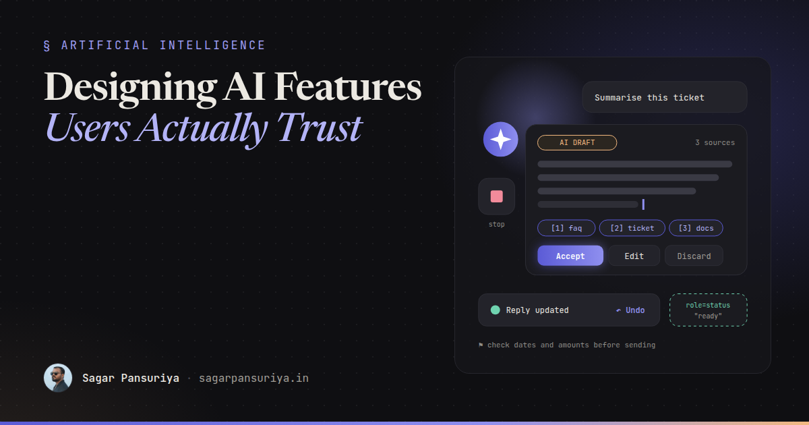
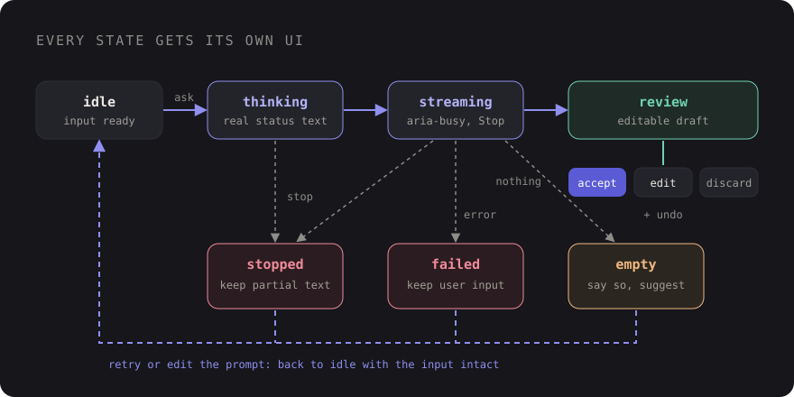

Designing AI Features Users Actually Trust: Frontend UX Patterns for LLM Interfaces


You've probably used an AI feature that felt like a slot machine. You click a sparkly button, a spinner turns for twelve seconds, and then a block of confident text appears with no hint of where it came from. Sometimes it's great. Sometimes it's quietly wrong. Either way, you have no idea which one you got.
Most AI features that fail with users don't fail because the model is bad. They fail because the interface gives people no way to judge the output, correct it, or back out of it. Trust is a frontend problem at least as much as a model problem.
This post collects the UX patterns I reach for when building LLM features into Laravel apps, with small Blade and Alpine sketches you can adapt: streaming with visible progress, sources, drafts instead of auto-actions, honest limitation messaging, undo, failure states, accessibility for streaming text, and cost and latency awareness.
Model the states before you style them
An AI request isn't a normal request. It's slow, it produces output gradually, it can be stopped halfway, and it can "succeed" with an answer that's useless. If your component only knows loading and done, every other case ends up as a vague error or a blank box.

I name every state explicitly in the component: idle, thinking (request sent,
no tokens yet), streaming, review (output complete, waiting for the user),
stopped, failed and empty. Each one gets its own UI. That single
decision fixes half the trust problems before any styling happens.
1. Stream, and show what's happening before the first token
Streaming makes a ten-second answer feel responsive, because people can start reading after a second or two. But the gap before the first token is where users give up, so fill it with a real status rather than a bare spinner: "Searching your documents…", "Reading 3 files…". Only show steps your backend is actually doing.
On the Laravel side, a streamed response is enough. Flush each chunk as the model produces it:
// routes/web.php
Route::post('/ai/summarise', function (Request $request) {
return response()->stream(function () use ($request) {
foreach (app(Summariser::class)->stream($request->input('text')) as $chunk) {
echo $chunk;
if (ob_get_level() > 0) {
ob_flush();
}
flush();
if (connection_aborted()) {
break; // user pressed Stop: stop paying for tokens
}
}
}, 200, ['Content-Type' => 'text/plain; charset=utf-8', 'X-Accel-Buffering' => 'no']);
})->middleware(['auth', 'throttle:ai']);And an Alpine component that reads the stream with fetch and supports stopping with an
AbortController:
Alpine.data('aiDraft', () => ({
state: 'idle',
output: '',
controller: null,
async generate(text) {
this.state = 'thinking';
this.output = '';
this.controller = new AbortController();
try {
const res = await fetch('/ai/summarise', {
method: 'POST',
headers: { 'Content-Type': 'application/json', 'X-CSRF-TOKEN': csrfToken },
body: JSON.stringify({ text }),
signal: this.controller.signal,
});
if (!res.ok) throw new Error(res.status);
const reader = res.body.getReader();
const decoder = new TextDecoder();
while (true) {
const { done, value } = await reader.read();
if (done) break;
this.state = 'streaming';
this.output += decoder.decode(value, { stream: true });
}
this.state = this.output.trim() ? 'review' : 'empty';
} catch (e) {
this.state = e.name === 'AbortError' ? 'stopped' : 'failed';
}
},
stop() { this.controller?.abort(); },
}));If you're in Livewire, wire:stream gives you the same effect without writing the fetch loop
yourself. The state model still applies either way.
2. Show sources, and make them checkable
If the answer is based on retrieved content (your docs, a customer's tickets, a PDF), show which pieces were used. Citations turn "trust me" into "check me", and users trust the second one more.
- Return sources as structured data from your backend, not as text the model writes. A model can invent a citation. Your retrieval step knows exactly which chunks it passed in.
- Link each source to the actual document or record, ideally to the relevant section.
- If nothing relevant was found, say so plainly instead of letting the model answer from general knowledge while looking grounded.
<ul class="mt-3 flex flex-wrap gap-2" aria-label="Sources">
@foreach ($sources as $i => $source)
<li>
<a href="{{ $source->url }}" class="chip">
[{{ $i + 1 }}] {{ $source->title }}
</a>
</li>
@endforeach
</ul>3. Drafts, not auto-actions
The most important rule on this list: the model proposes, the user decides. An AI that writes a reply is useful. An AI that sends the reply is a liability until it has earned a lot of trust.
Put generated output into an editable field, clearly labelled as a draft, with explicit actions. Nothing reaches a customer, a database record or an invoice until someone presses a button that says what it does.
<div x-show="state === 'review'" x-cloak>
<p class="text-xs uppercase tracking-wide text-amber-600">AI draft · review before sending</p>
<textarea x-model="output" rows="8" class="w-full"></textarea>
<div class="mt-2 flex gap-2">
<button type="button" @click="$wire.useDraft(output)">Use this reply</button>
<button type="button" @click="generate(source)">Try again</button>
<button type="button" @click="state = 'idle'; output = ''">Discard</button>
</div>
</div>A useful side effect: comparing what the model drafted with what the user actually sent is the best quality signal you'll get. Log both (with appropriate consent and retention rules).
4. Be honest about confidence and limits
Resist the urge to show a "92% confident" badge. Asking a model to rate its own certainty tends to produce numbers that look precise and mean very little. Show signals your system actually knows instead:
- "Based on 3 help articles" versus "No matching articles found, general answer".
- "Only the first 20 pages of this PDF were read."
- "Figures come from your March export." A date or scope the user can verify.
And put a short, specific limitation note near the output, not a wall of legal text in the footer. "Check amounts and dates before sending" is far more useful than "AI can make mistakes".
5. Undo beats confirmation dialogs
When an AI action does change something (rewriting a paragraph in place, bulk-tagging 200 tickets), a confirm dialog before it rarely helps. People click through them. An undo after it respects their time and still gives them control.
<div x-data="{ show: false }"
x-on:ai-applied.window="show = true; setTimeout(() => show = false, 8000)"
x-show="show" x-transition role="status">
Paragraph rewritten.
<button type="button" @click="$wire.revertLastAiEdit(); show = false">Undo</button>
</div>This only works if the backend keeps the previous version. Store it before applying the change (a revisions table, or a column holding the prior value) so undo is a real restore, not a best guess.
6. Design the failure states
AI features fail in more ways than normal forms, and each deserves its own message:
| State | What happened | What the UI should offer |
|---|---|---|
| Stopped | User pressed Stop | Keep the partial text, offer Continue or Retry |
| Failed | Timeout, provider error, rate limit | Plain message, Retry, and keep the user's input |
| Empty | Nothing useful came back | Say so, suggest adding more detail |
| Refused | Request out of scope | Explain what the feature can help with |
The one non-negotiable: never throw away what the user typed. Losing a carefully written prompt to a timeout is the fastest way to make someone stop using the feature.
7. Accessibility for streaming text
Streaming is hard on screen reader users if you do the obvious thing. Putting aria-live on
the element that receives tokens can cause a flood of fragment announcements, or the reader re-reading
the whole block every few words, depending on the browser and screen reader.
A calmer pattern:
- Mark the output container
aria-busy="true"while streaming, and don't make it a live region. - Use a separate, visually hidden
role="status"element (polite by default) to announce the state changes: "Generating summary", then "Summary ready" or "Generation failed". - Don't move focus while text streams in. Keep the Stop button reachable by keyboard, and when output is done, let the user move to it themselves.
- Respect
prefers-reduced-motionfor typing cursors and shimmer effects.
<div class="prose" :aria-busy="state === 'streaming'" x-text="output"></div>
<p class="sr-only" role="status" x-text="{
thinking: 'Generating summary',
review: 'Summary ready',
failed: 'Generation failed. Your text is kept.',
stopped: 'Generation stopped',
}[state] ?? ''"></p>
<button type="button" x-show="['thinking', 'streaming'].includes(state)" @click="stop()">
Stop generating
</button>Test it with a real screen reader. VoiceOver on macOS and NVDA on Windows are both free, and ten minutes with either will tell you more than any checklist.
8. Make cost and latency visible
Every generation costs money and time, for you and often for the user. A few small touches keep that under control:
- Disable the trigger while a request is running so double clicks don't send two paid requests.
- Set expectations for slow operations: "Usually takes 10 to 20 seconds" next to the button turns an anxious wait into a known one.
- Make Stop actually stop. Abort the fetch in the browser and check
connection_aborted()on the server, so a cancelled request stops consuming tokens. - Rate-limit per user with a named limiter, and show a friendly message with the wait time instead of a raw 429.
- Show usage if users have credits or quotas, before the expensive action, not after.
- Cache results for identical inputs where it's safe, like summarising the same document twice.
A checklist for your next AI feature
- Every state has its own UI: thinking, streaming, review, stopped, failed, empty.
- A real status appears within a second, and output streams in.
- Sources come from your retrieval step and link to the originals.
- Output lands as an editable draft. Nothing is sent or saved without an explicit action.
- Limitation notes are specific and sit next to the output.
- AI edits can be undone, backed by a stored previous version.
- User input survives every failure.
- Streaming text isn't a live region. A separate polite status announces state changes.
- Stop works end to end, triggers are rate-limited, and slow actions set expectations.
None of these patterns make the model smarter. They make its output legible, correctable and reversible, and that's what people actually mean when they say they trust a tool.
Discussion